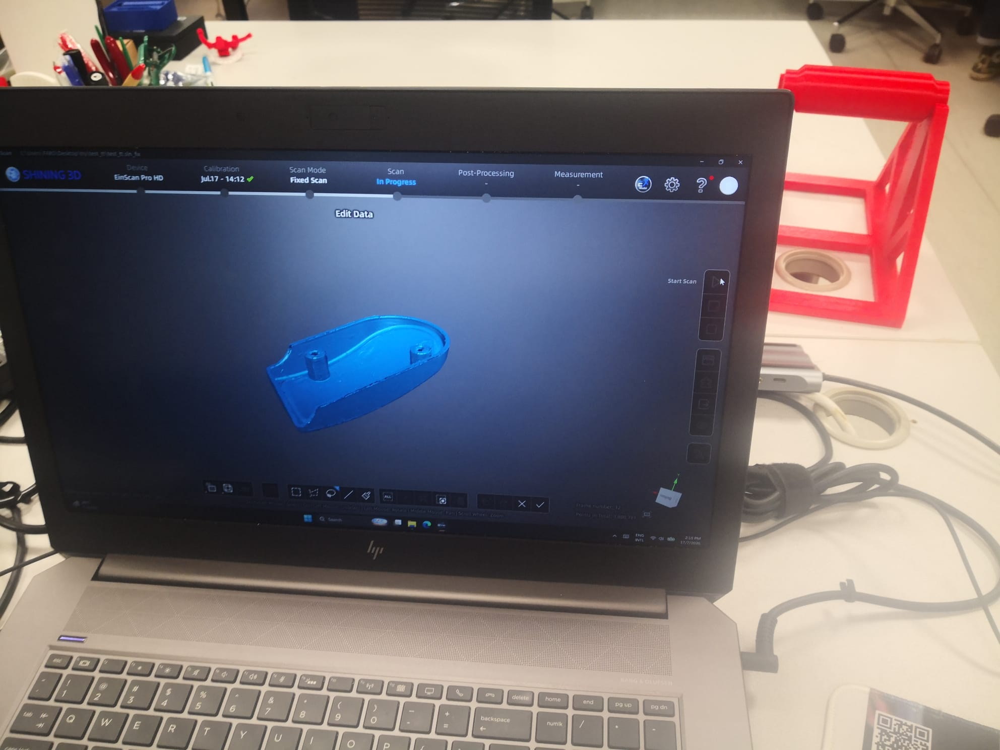

week 1-3 CAD
I learnt more surface modelling techniques in NX. That the tools are more flexibile when creating complex shapes then i thought.
week 4 Design fundementals & CAD test
I learnt different design methods and when each approach is appropriate. I also learnt how the Law Extension feature differs from a standard extrusion by allowing the extension distance and shape to be controlled more precisely.
week 6-7 convergent modeling
This module taught me how scanned mesh models can be reconstructed into editable CAD models. It also reinforced the importance of carefully reading instructions and checking each step before making changes as i kept on getting stuck cause i didnt read carefully.
week 11-12 Topology Optimization
I learnt to do free body digram and caluate moment and forces I learnt how to add loads on to the models.
week 14-15 3D Scanning & fusion


3D scanning learn handheld and with turntable very fun. changed from nx to fusion. started learning the interface of fusion
week 16-17
3d scanning continueg